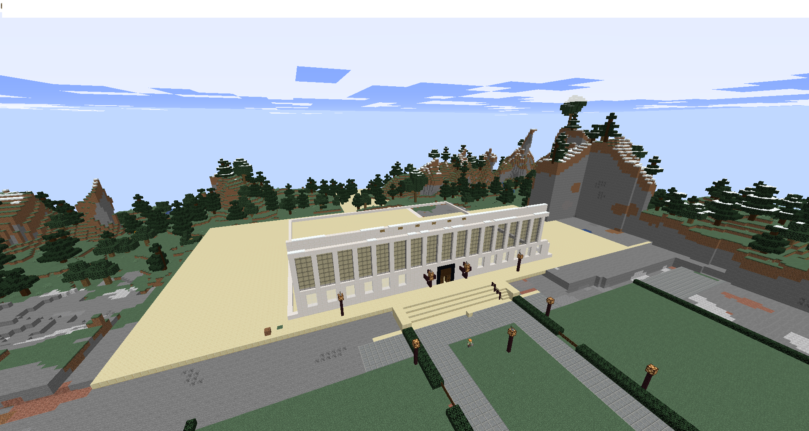

Student projects are how we're going to rebuild Columbia together!
Student projects are essentially regions that are dedicated to building one particular building on campus.
All members with the Student rank and up can build on these sites.
To get started, simply send us an email proving that you're affiliated with Columbia!
Current Student Project:
The current student project is Butler! A central landmark of our school!
